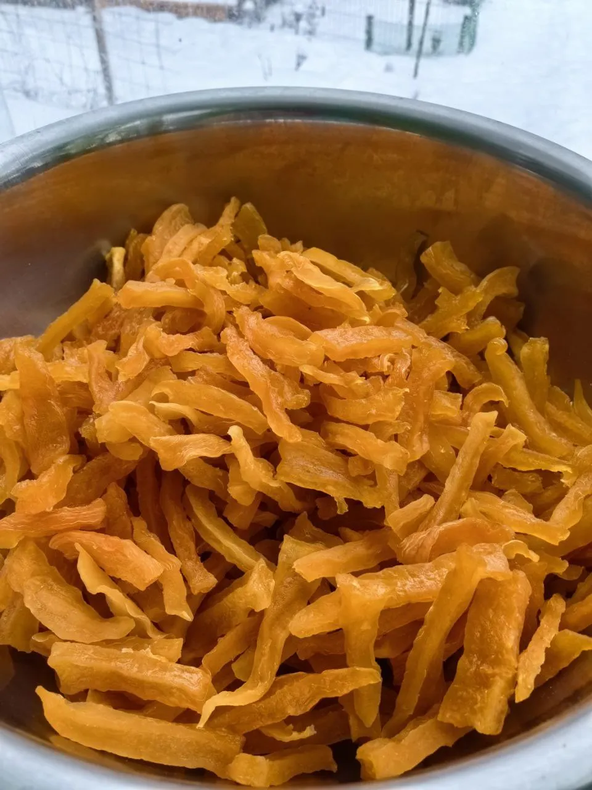

Описание
Лакомство из батата, которое заменит все конфеты. Цукаты из батата — это не только вкусное, но и полезное лакомство, которое может стать отличным дополнением к вашему рациону.
Батат имеет низкий гликемический индекс, что делает его отличным выбором для людей, следящих за уровнем сахара в крови. Цукаты сохраняют многие полезные вещества, а антиоксиданты помогают поддерживать общее здоровье.
Ингредиенты
- Батат — 500 г
- Сахар — 300 г
- Вода — 200 мл
Приготовление
1
Подготовка. Очистите батат и нарежьте его на тонкие полоски или кубики.
2
Бланширование. Бланшируйте нарезанные кусочки в кипящей воде несколько минут для сохранения цвета и вкуса. Этот этап можно пропустить — тогда пересыпьте батат сахаром и дайте постоять до появления сиропа. Кипятите до полумягкости, чтобы не разварился.
3
Сахарный сироп. Поместите батат в сахарный сироп (вода с сахаром) и варите до тех пор, пока он не станет мягким и не впитает сладость.
4
Сушка. После варки высушите кусочки батата в духовке или сушилке до достижения нужной текстуры.
Как использовать цукаты из батата
- Выпечка: добавьте в тесто для пирогов или кексов
- Салаты: используйте для текстуры и сладости
- Закуски: ешьте как самостоятельное лакомство
- Десерты: добавляйте в муссы или мороженое